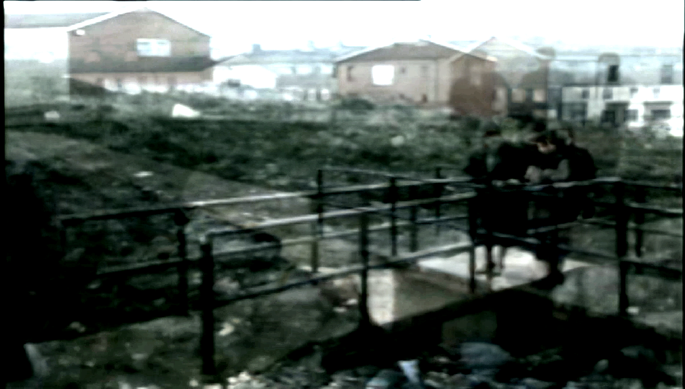
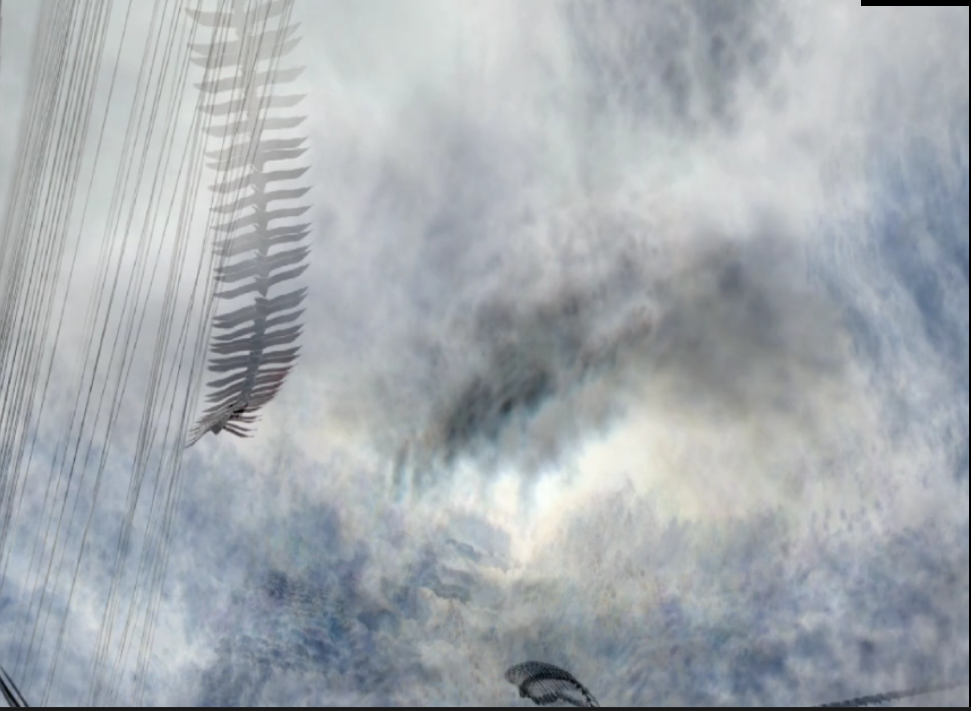
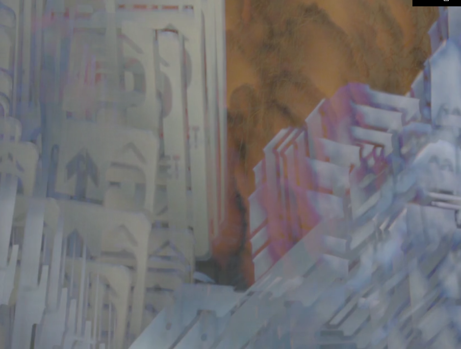
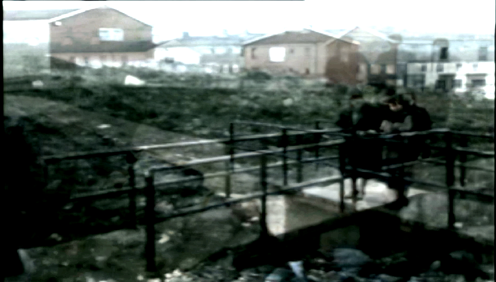
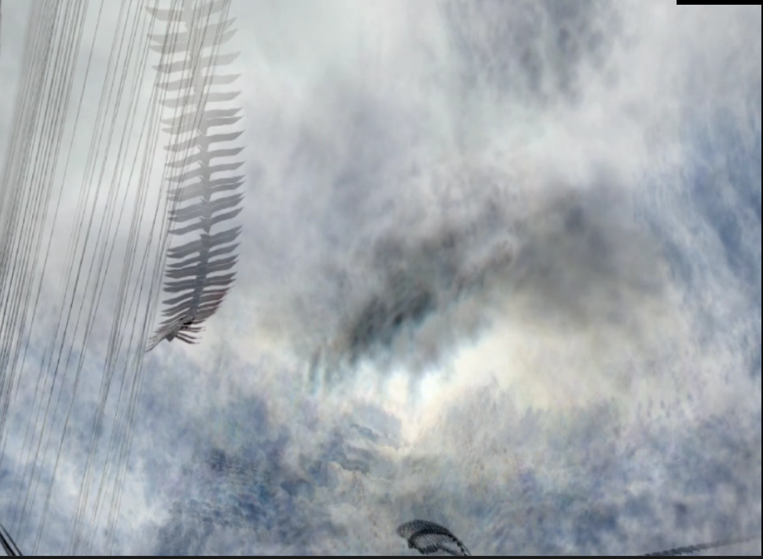
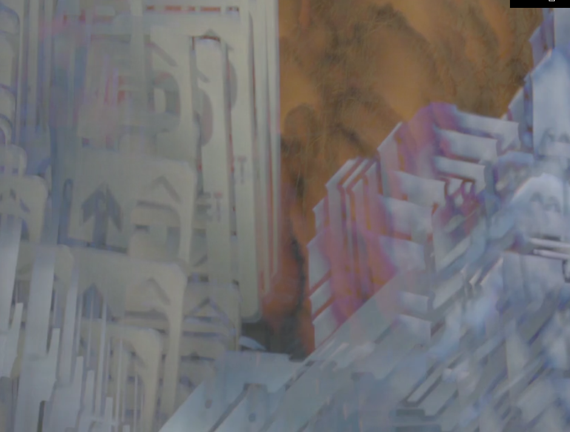

MEMORY BANK is an exploration of video feedback and screen burn-in. The inspiration behind the work was drawn from the phenomenon of the ghost-image or screen burn-in that occurs in older electronic display devices such as the CRT-type monitors, where the non-uniform use of pixels is a result of prolonged exposure of non-moving images creates ghost-like images from the static objects. MEMORY BANK is a collection of stills produced by various image processing techniques, which were designed specifically to mimic the effects of screen burn-in.

The project is also an exercise in understanding computational memory while experimenting with alternative modes of memory and how it processes and stores information – showcasing a different abstraction of reality through familiar locations and objects around the city of Limerick.
*Collection of stills*
 




